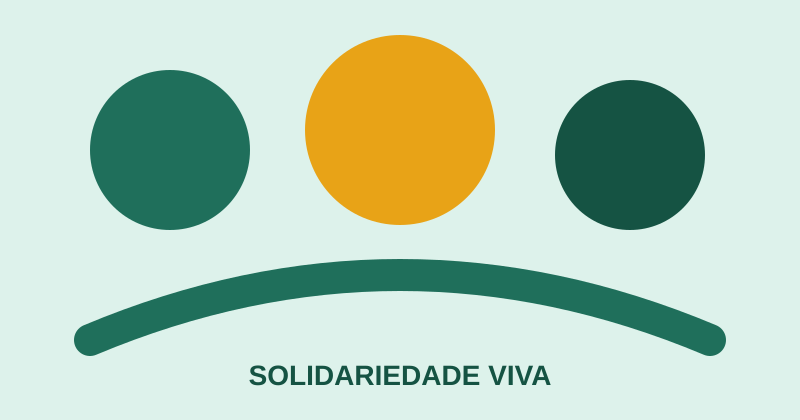

Acolher
Identificamos necessidades e aproximamos iniciativas de quem precisa de apoio.
Uma rede de cuidado
A Solidariedade Viva conecta voluntários, doadores e iniciativas locais para transformar recursos em apoio concreto à comunidade.

Quem somos
Nossa proposta é facilitar a participação de pessoas que desejam contribuir com tempo, recursos ou habilidades.
Identificamos necessidades e aproximamos iniciativas de quem precisa de apoio.
Organizamos campanhas e oportunidades de voluntariado de forma simples e transparente.
Direcionamos esforços para ações que fortalecem pessoas e comunidades.
Escolha uma forma de participar e encontre uma iniciativa que combine com você.
Cadastrar interesse